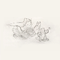

My Music Catalogue
| Art | Album | Artist | Year | Rating | Thoughts | Owned on |
| Tidal | Fiona Apple | 1996 | 08/10 | An incredible debut album from one of the greatest artists of all time IMO. It's unbelievable to me that she released such a classic at only 18 years old, already having mastered songwriting with a level of depth and maturity that most don't reach at all within their lifetimes. Favorite Tracks: Shadowboxer, Slow Like Honey, The Child Is Gone |
Digital | |
 |
When The Pawn... | Fiona Apple | 1999 | 10/10 | One of my favorites of all time for sure. Every song on this album hits so incredibly hard one way or another, and it pretty much perfectly encapsulates my music taste. Fiona's songwriting is impeccable as always, and Jon Brion's theatrical production elevates it to a legendary album that I constantly find myself coming back to. Favorite Tracks: All of them |
Vinyl |
 |
Extraordinary Machine | Fiona Apple | 2005 | 08/10 | A very solid and extraordinarily fun album. Not much to say about it. The individual tracks are all awesome on their own, but looking at the album as a whole it feels a little bit lacking in comparison with her previous album, hence the docking of a couple points. Favorite Tracks: Extraordinary Machine, Get Him Back, Better Version of Me, Tymps, Oh Well, Not About Love, Waltz (Better Than Fine) |
Digital |
 |
The Idler Wheel... | Fiona Apple | 2012 | 09/10 | This album marks a shift in Fiona's discography from bold heavy-hitting theatrics to more stripped-back and percussive tracks with a much larger focus on songwriting. The lack of theatrical production does nothing to impact the intensity conveyed by the album (although I do miss the fun of it somewhat!)--her songwriting and vocal performances have evolved to the point that she simply doesn't need it anymore. I'd say The Idler Wheel fully cemented her place as a legendary figure in modern music. Favorite Tracks: Every Single Night, Daredevil, Jonathan, Left Alone, Anything We Want, Hot Knife, Largo |
Vinyl |
 |
Fetch The Bolt Cutters | Fiona Apple | 2020 | 09/10 | A wonderfully experimental album that builds off the direction Fiona went in with The Idler Wheel. Many of the songs on this album don't feature piano at all, unlike her previous albums, but rather focus on unconventional percussion and vocals. It took a bit to get used to, but it really grew on me and I'd consider it one of Fiona's best. Favorite Tracks: I Want You To Love Me, Shameika, Relay, Rack of His, Newspaper, Ladies, Cosmonauts, On I Go |
Digital |
| Masterpiece | Big Thief | 2016 | 07/10 | A strong debut garage-rock album. Adrianne's beautiful songwriting and knack for catchy melodies make Masterpiece a pleasure to listen through. "Vegas" is slightly boring to me, and "Interstate" & "Parallels" feel a bit underdeveloped, but otherwise it's a very enjoyable album. Favorite Tracks: Masterpiece, Real Love, Paul, Humans, Randy |
Vinyl | |
 |
Capacity | Big Thief | 2017 | 07/10 | A very good follow-up to their debut. The instrumentals are much less heavy on this one, with more ethereal vocals set over smooth guitar tones and relaxed percussion. I still find a few tracks like "Coma" and "Black Diamonds" a little underdeveloped, but it's overall a very pretty-sounding album that clicks together with Adrianne's songwriting nicely. Favorite Tracks: Shark Smile, Watering, Great White Shark, Objects, Haley |
Digital |
| U.F.O.F. | Big Thief | 2019 | 08/10 | A beautifully produced indie folk album with light vocals and celestial guitar instrumentation. Adrianne's songwriting takes a more abstract direction, with beautiful and oftentimes harrowingly evocative imagery. The track "Jenni" is somewhat repetitive and doesn't fit very well on the album, but everything else about it is magical. Favorite Tracks: UFOF, Cattails, Open Desert, Orange, Century, Magic Dealer |
Digital | |
| Two Hands | Big Thief | 2019 | 08/10 | A more grounded and acoustic sister album to UFOF. "The Toy", "Those Girls", and "Cut My Hair" have sort-of unconventional vocals and production, and I personally enjoy it even if I find it a little strange. The album as a whole is a very nice listen. Favorite Tracks: Forgotten Eyes, Two Hands, Shoulders, Not, Replaced |
Digital | |
|  | Dragon New Warm Mountain I Believe In You | Big Thief | 2022 | 10/10 | My favorite folk album ever. Big Thief draws influences from country, bluegrass, Americana, and even trip-hop, trap, and psychadelic music throughout this sprawling 20-track album with songwriting that beautifully captures the full range of human emotion. Adrianne's vocals match the instrumentation perfectly as well. It's silly, heartbreaking, ethereal, intimate, strange, and filled to the brim with pure joy. Favorite Tracks: Time Escaping, Spud Infinity, Certainty, Dragon New Warm Mountain I Believe In You, Sparrow, Blurred View, Red Moon, No Reason, Simulation Swarm, Love Love Love, Blue Lightning |
Vinyl |
 |
Hours Were the Birds | Adrianne Lenker | 2014 | 07/10 | Digital | |
 |
a-sides and besides | Adrianne Lenker | 2014 | 07/10 | Digital | |
 |
abysskiss | Adrianne Lenker | 2018 | 06/10 | Digital | |
| songs | Adrianne Lenker | 2020 | 09/10 | Vinyl | ||
| Bright Future | Adrianne Lenker | 2024 | 09/10 | Vinyl | ||
 |
the first glass beach album | glass beach | 2019 | 07/10 | Vinyl | |
 |
plastic death | glass beach | 2024 | 09/10 | Digital | |
| LUSH | Mitski | 2012 | 08/10 | Digital | ||
| Retired from Sad, New Career in Business | Mitski | 2013 | 08/10 | Digital | ||
| Bury Me At Makeout Creek | Mitski | 2014 | 08/10 | Digital | ||
| Puberty 2 | Mitski | 2016 | 08/10 | Digital | ||
 |
Be The Cowboy | Mitski | 2018 | 09/10 | Vinyl | |
| Laurel Hell | Mitski | 2022 | 07/10 | Vinyl | ||
 |
The Land Is Inhospitable and So Are We | Mitski | 2023 | 09/10 | Vinyl | |
| Everything Is A Lot | Will Wood And The Tapeworms | 2015 | 08/10 | Vinyl | ||
 |
SELF-iSH | Will Wood And The Tapeworms | 2016 | 07/10 | Digital | |
| The Normal Album | Will Wood | 2020 | 08/10 | Vinyl | ||
| Everything Is A Lot | Will Wood | 2022 | 07/10 | Vinyl | ||
 |
For the first time | Black Country, New Road | 2021 | 08/10 | Digital | |
 |
Ants From Up There | Black Country, New Road | 2022 | 09/10 | Digital | |
 |
Live At Bush Hall | Black Country, New Road | 2023 | 08/10 | Vinyl | |
| OK Computer | Radiohead | 1997 | 10/10 | Vinyl | ||
| In Rainbows | Radiohead | 2007 | 09/10 | Digital |